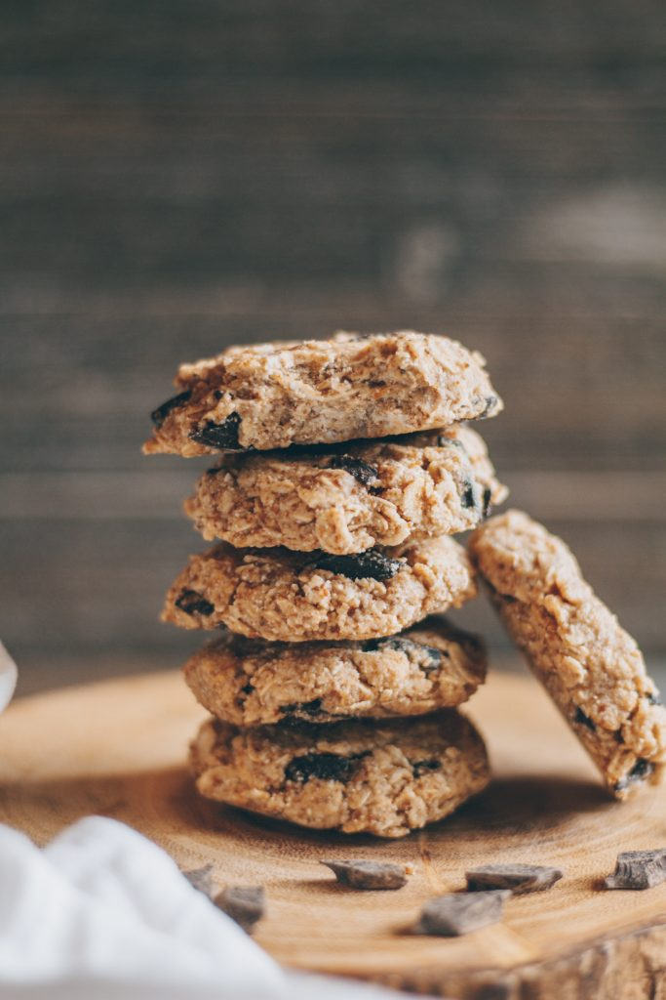

No Bake Chocolate Peanut Butter Oat Cookies

Description:
Chewy, delicious, and healthy no-bake chocolate chip oatmeal cookies with peanut butter.
These cookies are very easy to make, and don't require any baking!
Ingredients:
- Peanut Butter
- Coconut Oil
- Oats
- Chocolate Chips
Instructions:
- Whisk together the coconut oil, peanut butter, vanilla, and coconut sugar.
- Ditribute the mixture evenly onto a baking sheet lined with parchment paper.
- Transfer to the freezer to set.
- Leave cookies in the freezer for 10 mintues.